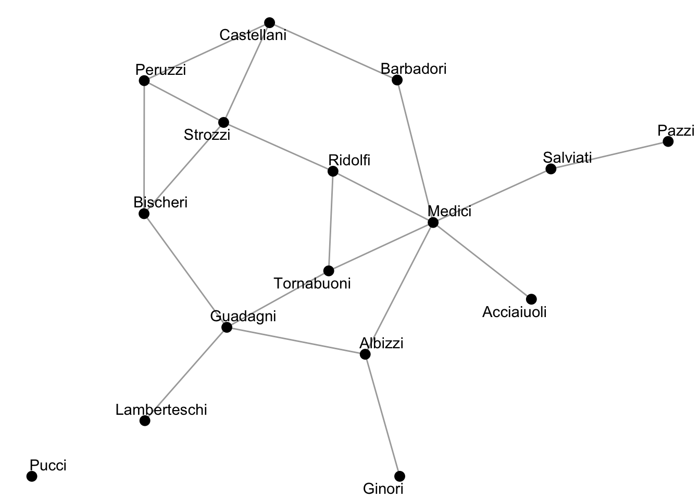
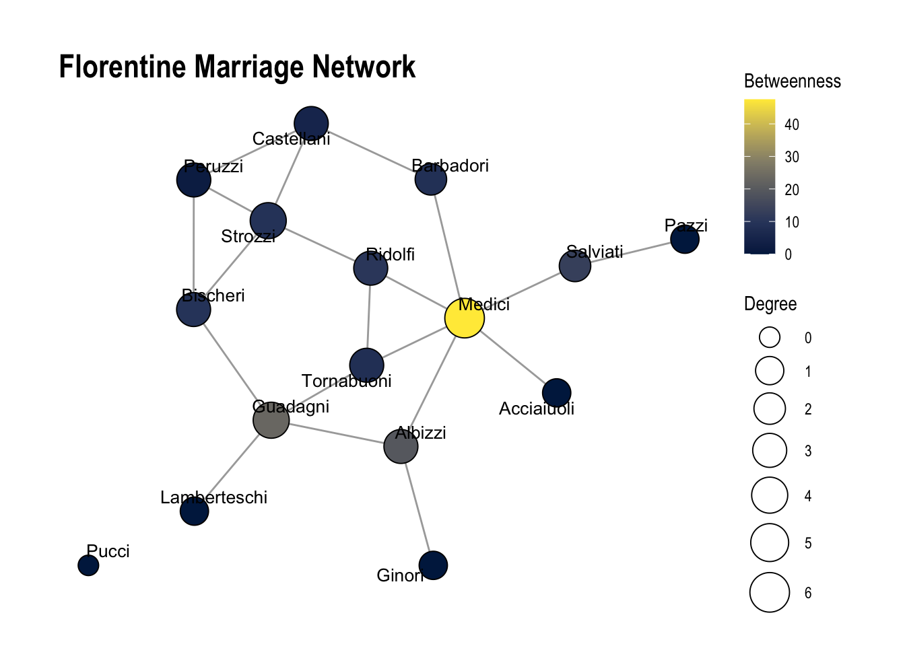
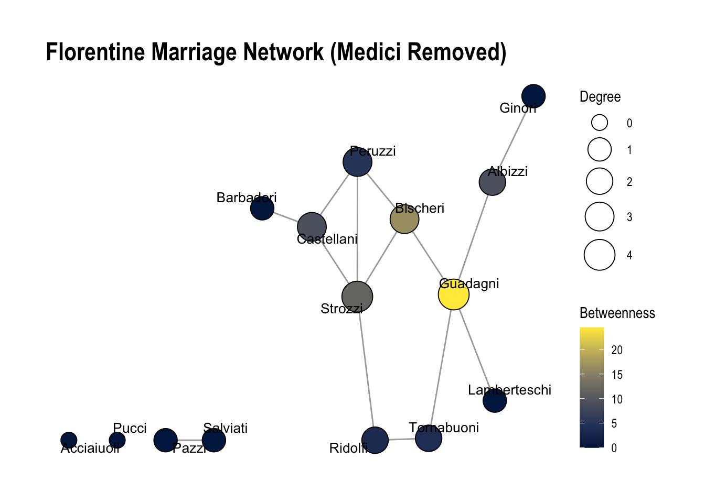
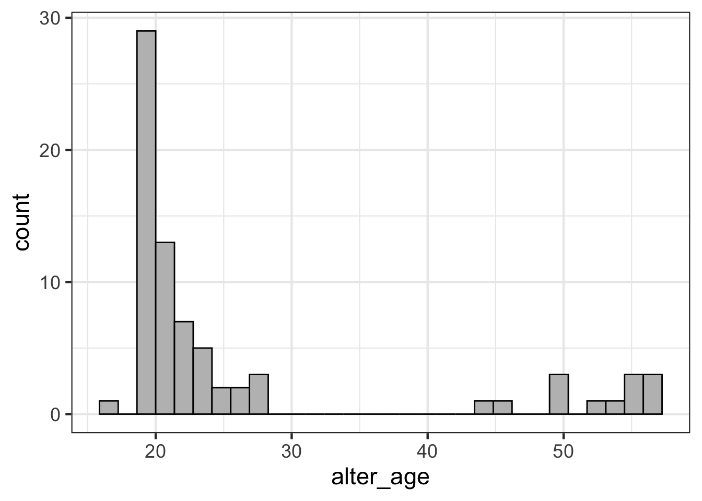
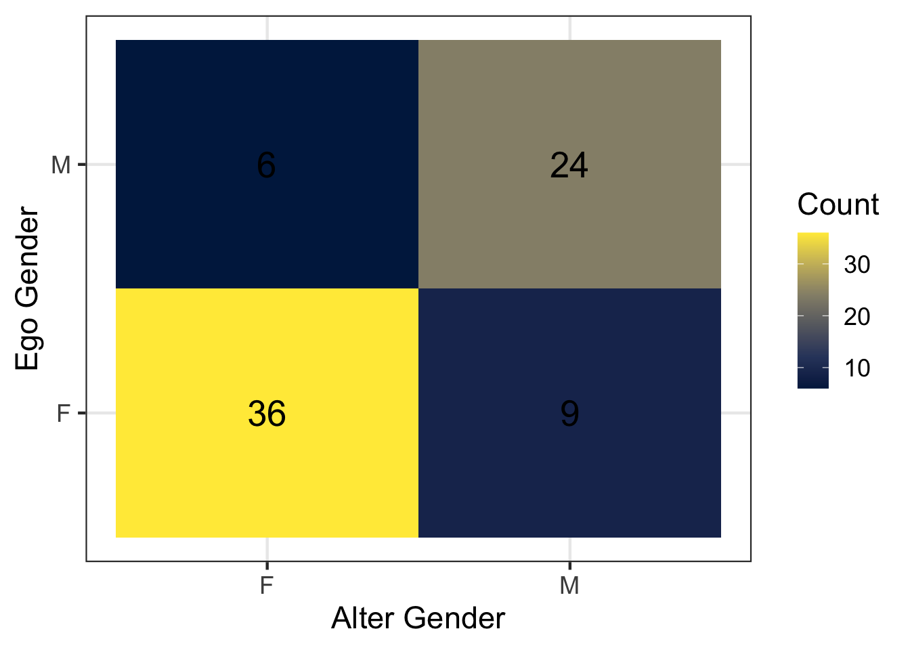
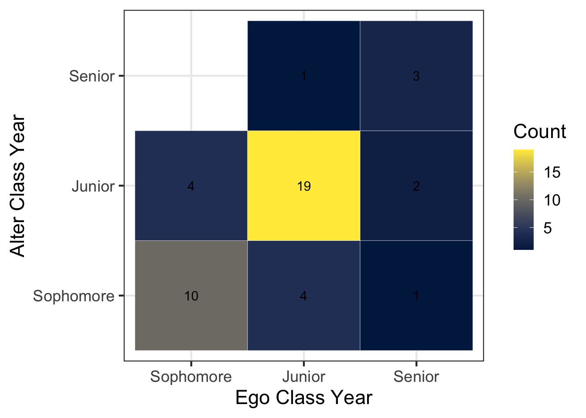

# install packages
# install.packages("tidygraph")
# install.packages("ggraph")
# devtools::install_github("schochastics/networkdata")Lab 2
Overview of Lab 2
Welcome to R Lab 2! In this lab, we will complete two different exercises:
- Explore how to analyze and visualize network data with the package
tidygraph, using a historical Renaissance marriage network dataset. - Investigate how much homophily there is in our class’s discussion networks using the survey data we collected in class
Each exercise will have a few questions at the end for you to complete. Please complete these questions and upload the .qmd file to the corresponding lab assignment to Canvas to receive full credit for the lab.
Exercise 1: Analyze network data
We will use the Florentine Family Marriage dataset as a running example for network analysis. Before we start, we need to install and load required R packages. An R package is a collection of functions (e.g., functions to plot networks) that will help us with our analysis.
tidygraphincludes tools for network analysis.ggraphis used for visualizing networks.networkdatacontains network datasets, including the Florentine marriage network we will use.
Recall that to install a package, we need to use the function: install.packages(). Delete the hashtags (#) from the bottom three lines to install the packages. If prompted, update all other packages.
Next, we’ll need to library the packages with the function library(). This allows us to use the packages for this session. We only need to install packages once, but load with library() every time we start a new session.
# load packages
library(tidyverse)
library(tidygraph)
library(networkdata)
library(ggraph)
# set theme for plots
theme_set(theme_bw(base_size = 17))Now we load the Florentine Family Marriage dataset flo_marriage into the current R session with the function data(). This data is from the networkdata package.
The data originate from research on social relations among Renaissance Florentine families collected by John Padgett from historical documents. Breiger and Pattison (1986) later used this subset of the data in their analysis of social roles.
data("flo_marriage")The flo_marriage is stored as a network igraph object. To use tidygraph, we need to convert this network object into a tidygraph object using as_tbl_graph so we can analyze it using the functions in the tidygraph package. We store the result in an object named flo_tbl.
flo_tbl <- as_tbl_graph(flo_marriage)
flo_tbl# A tbl_graph: 16 nodes and 20 edges
#
# An undirected simple graph with 2 components
#
# Node Data: 16 × 4 (active)
name wealth `#priors` `#ties`
<chr> <dbl> <dbl> <dbl>
1 Acciaiuoli 10 53 2
2 Albizzi 36 65 3
3 Barbadori 55 0 14
4 Bischeri 44 12 9
5 Castellani 20 22 18
6 Ginori 32 0 9
7 Guadagni 8 21 14
8 Lamberteschi 42 0 14
9 Medici 103 53 54
10 Pazzi 48 0 7
11 Peruzzi 49 42 32
12 Pucci 3 0 1
13 Ridolfi 27 38 4
14 Salviati 10 35 5
15 Strozzi 146 74 29
16 Tornabuoni 48 0 7
#
# Edge Data: 20 × 2
from to
<int> <int>
1 1 9
2 2 6
3 2 7
# ℹ 17 more rowsThe dataset contains two components, a node table and an edge table. Each node represents a Florentine family in the early 15th century, and each edge represents a marriage tie between two families.
There are four columns (variables) in the node table:
name: the names of Florentine Families.wealth: each family’s net wealth in 1427 (reported assets minus deductions, including business loans) from 1427 catasto (in thousands of lira).#priors: the number of priorates (seats on the civic council) held between 1282-1344, reflecting the family influence.ties: the total number of business or marriage ties in the total dataset of 116 families.
There are two columns (variables) in the edge table:
from: the node ID that the edge starts fromto: the node ID that the edge connects to
The edge table gives us the information on which nodes are connected as marriage ties. Node IDs are used instead of family names because numerical IDs are more efficient for a computer to work with.
You can find more information about how this dataset was generated from this paper:
Breiger R. and Pattison P. (1986). Cumulated social roles: The duality of persons and their algebras. Social Networks, 8, 215-256. https://doi.org/10.1016/0378-8733(86)90006-7
Overall, we can learn from the output that:
The network has 16 families (nodes) and 20 marriage ties (edges).
It is undirected (marriage is mutual). If someone in family A is married to someone in family B, someone in family B is married to someone in family A.
If you want to check explicitly the number of nodes and edges, use the following two functions from the tidygraph package. This takes a few steps.
# Number of nodes
flo_tbl %>%
activate(nodes) %>%
as_tibble() %>%
count(name = "n_nodes")# A tibble: 1 × 1
n_nodes
<int>
1 16# Number of edges
flo_tbl %>%
activate(edges) %>%
as_tibble() %>%
count(name = "n_edges")# A tibble: 1 × 1
n_edges
<int>
1 20In the code chunk above, let’s focus on the nodes-related lines first:
%>% is the pipe operator that lets us chain operations together without creating intermediate objects. It works by taking the object on the left-hand side and passing it as the first argument to the next function.
activate() tells tidygraph to apply subsequent manipulations to the nodes, since the tbl_graph objects hold two separate, linked tables (nodes and edges).
as_tibble() converts the tbl_graph object into a regular table so that standard data-frame functions like count() can work. A tbl_graph is not a regular data frame.
count(name = "n_nodes") counts the number of rows and assigns the number to a column n_nodes.
The Medici Family
Now that we have a basic understanding of the network, we can do some basic analysis of the network. The Medici family was a powerful banking dynasty in Florence that produced renowned patrons of the arts, four popes, and two French queens, leaving a lasting impact on European economy, culture, and politics.
Can we observe the Medici family’s influence from the family marriage network structure?
Let’s visualize the network first using the ggraph package.
# fix randomness so that our results can be reproduced
set.seed(8287)
## visualize the graph
ggraph(flo_tbl, layout = "stress") +
geom_edge_link(alpha = 0.4) +
geom_node_point(size = 3) +
geom_node_text(aes(label = name), repel = TRUE) +
theme_void()
In the code chunk above:
set.seed(): fix the starting point of R’s random number generator. Without setting a seed (e.g., 8287), layout algorithms in ggraph that rely on randomness may produce slightly different network visualizations each time the code is executed.
ggraph(flo_tbl, layout = "stress"): a function used to visualize networks. flo_tbl is the network object being plotted, and layout = "stress" specifies a force-directed layout algorithm that positions nodes so that connected nodes appear closer together in the visualization.
+: the syntax allows us to add layers to the plot.
geom_edge_link(alpha = 0.4): a function used to draw the edges of the network, so that each row in the edge table becomes a connection (tie) in the visualization. The argument alpha = 0.4 controls the transparency of the edge lines, where 0 is fully transparent and 1 is fully opaque. Setting it to 0.4 makes the edges lighter, which helps reduce visual clutter and makes the nodes easier to distinguish.
geom_node_point(size = 3): a function used to draw the nodes as points (circles), so that each row in the node table corresponds to one node in the visualization. The argument size = 3 controls how large the nodes appear in the plot.
geom_node_text(aes(label = name), repel = TRUE): a function used to add text labels to nodes. aes() stands for aesthetic mapping, and it tells R to use the variable name from the node table as the label. repel = TRUE prevents labels from overlapping and makes the plot more readable.
theme_void(): a function that removes axes, ticks, and background grid to make the plot cleaner.
Note: Graphs can be visualized in different ways. In the code above, try changing the layout = "stress" in the code block above to something like layout = "circle" or layout = "fr". How did this change the plot?
[Comprehension check]
Based on the visualization above, what families appear to be the most important to this network?
Centrality Measures
Now we move to measurements for centrality. We will calculate two types of centrality: degree centrality and betweenness centrality.
## calculate centrality measures
flo_tbl <- flo_tbl %>%
activate(nodes) %>%
mutate(degree = centrality_degree(),
betweenness = centrality_betweenness())
## print out centrality
flo_tbl %>%
as_tibble() %>%
select(name, degree, betweenness)# A tibble: 16 × 3
name degree betweenness
<chr> <dbl> <dbl>
1 Acciaiuoli 1 0
2 Albizzi 3 19.3
3 Barbadori 2 8.5
4 Bischeri 3 9.5
5 Castellani 3 5
6 Ginori 1 0
7 Guadagni 4 23.2
8 Lamberteschi 1 0
9 Medici 6 47.5
10 Pazzi 1 0
11 Peruzzi 3 2
12 Pucci 0 0
13 Ridolfi 3 10.3
14 Salviati 2 13
15 Strozzi 4 9.33
16 Tornabuoni 3 8.33In the code chunk above, we first tell R to apply subsequent manipulations to the nodes using activate(nodes). Then we have the following functions:
mutate(): add new columns to the active table (which is currently the node table).
centrality_degree(): calculate the degree centrality (the number of connections) for each node. The result is stored in a new column called degree.
centrality_betweenness(): calculate the betweenness centrality (how many times a node lies on the shortest path between other nodes) for each node. The result is stored in a new column called betweenness.
With as_tibble(), we again convert the tbl_graph object into a regular table.
select(): chooses only the columns we want to display. Here, we want to display only the family names, degree centrality, and betweenness centrality values.
Now let’s combine the two centrality measures into one visualization:
set.seed(8287)
flo_tbl %>%
ggraph(layout = "stress") +
geom_edge_link0(alpha = 0.4) +
geom_node_point(
aes(size = degree, fill = betweenness),
shape = 21
) +
geom_node_text(
aes(label = name), repel = TRUE, size = 3.5) +
scale_fill_viridis_c( option = "cividis", name = "Betweenness") +
scale_size(range = c(5, 10), name = "Degree") +
theme_graph() +
labs(title = "Florentine Marriage Network")
In the code chunk above, we first set the seed to 8287 to ensure reproducibility. We then tell tidygraph to apply subsequent operations to the node table using activate("nodes"), and add the computed degree and betweenness centrality using mutate().
Next, we use ggraph() to create the network visualization and add layers step by step.
geom_edge_link0(alpha = 0.4): This draws the edges (connections) between nodes. As in the previous visualization, we set alpha = 0.4 to make the edges slightly transparent, which reduces visual clutter and makes the nodes easier to see.
geom_node_point(): This draws the nodes as points. Inside aes() (aesthetic mapping), we specify size = degree and fill = betweenness, meaning that node size represents degree centrality and node color represents betweenness centrality. This allows us to compare the two measures visually. The argument shape = 21 enables both fill color and border color for the nodes, which is necessary when mapping fill aesthetics.
geom_node_text(): This adds labels to each node. We specify label = name to display each family’s name, use repel = TRUE to prevent text overlap, and control the text size with size = 3.5.
scale_fill_viridis_c(option = "cividis", name = "Betweenness"): This defines the color scale for betweenness centrality. We use the colorblind-friendly “cividis” palette and label the legend as “Betweenness.”
scale_size(range = c(5, 10), name = "Degree"): This controls the visual size range of the nodes, scaling them between 5 and 10, and labels the legend as “Degree.”
theme_graph(): This removes axes and background elements to create a cleaner network visualization.
labs(title = "Florentine Marriage Network"): This allows us to add or modify labels in a plot. Here, we add a title for the plot with title = "Florentine Marriage Network".
Exercise Questions (1.1 - 1.4)
1.1 What does each centrality measure reveal about the Medici family’s influence, and what does this imply about its power in the network?
1.2 What would happen if we remove Medici from the network? Run the code below and describe how the network has changed. Now which family appears to be the most important? Is the network more fragmented (i.e, contain more components)?
1.3 Based on your answers to 1.1 and 1.2, describe two types of social capital theorized by Robert Putnam that the Medici family likely has. How do you know?
## First, drop the Medici family and recalculate centrality measures
flo_tbl_no_medici <- flo_tbl %>%
filter(name != "Medici") %>% ## filter to drop Medici family
activate(nodes) %>%
mutate(
degree = centrality_degree(),
betweenness = centrality_betweenness()
)
## Replot without Medici family
flo_tbl_no_medici %>%
ggraph(layout = "stress") +
geom_edge_link0(alpha = 0.4) +
geom_node_point(
aes(size = degree, fill = betweenness),
shape = 21
) +
geom_node_text(
aes(label = name), repel = TRUE, size = 3.5) +
scale_fill_viridis_c( option = "cividis", name = "Betweenness") +
scale_size(range = c(5, 10), name = "Degree") +
theme_graph() +
labs(title = "Florentine Marriage Network (Medici Removed)")
1.4. Run the code below. Based on the number of priors, which family appears the most important? Based on wealth? Reflect: What does a network perspective add?
flo_tbl %>%
activate(nodes) %>%
as_tibble() %>%
arrange(desc(`#priors`)) # A tibble: 16 × 6
name wealth `#priors` `#ties` degree betweenness
<chr> <dbl> <dbl> <dbl> <dbl> <dbl>
1 Strozzi 146 74 29 4 9.33
2 Albizzi 36 65 3 3 19.3
3 Acciaiuoli 10 53 2 1 0
4 Medici 103 53 54 6 47.5
5 Peruzzi 49 42 32 3 2
6 Ridolfi 27 38 4 3 10.3
7 Salviati 10 35 5 2 13
8 Castellani 20 22 18 3 5
9 Guadagni 8 21 14 4 23.2
10 Bischeri 44 12 9 3 9.5
11 Barbadori 55 0 14 2 8.5
12 Ginori 32 0 9 1 0
13 Lamberteschi 42 0 14 1 0
14 Pazzi 48 0 7 1 0
15 Pucci 3 0 1 0 0
16 Tornabuoni 48 0 7 3 8.33Exercise 2: Homophily Survey
Now we’ll turn to analyzing data from our homophily survey. In this survey, we collected information about an ego and five of their discussion partners (alters). All nonsensical responses and missing data have been dropped. We’ll read this file in from where it is stored (on Github) using the read_csv() function.
The data is formatted in long format, where each row represents a different alter. This means that we will have 5 rows for each ego.
## read in survey responses
responses <- read_csv("https://raw.githubusercontent.com/caseybreen/networks_course/main/data/homophily_survey.csv")
## print out survey responses
responses# A tibble: 75 × 13
ego_id date ego_gender ego_age ego_classyear ego_origin ego_ai alter_id
<dbl> <chr> <chr> <dbl> <chr> <chr> <chr> <dbl>
1 1 2/26/2026 F 19 Sophomore Austin No 1
2 1 2/26/2026 F 19 Sophomore Austin No 2
3 1 2/26/2026 F 19 Sophomore Austin No 3
4 1 2/26/2026 F 19 Sophomore Austin No 4
5 1 2/26/2026 F 19 Sophomore Austin No 5
6 2 2/26/2026 M 20 Junior Rest of US No 1
7 2 2/26/2026 M 20 Junior Rest of US No 2
8 2 2/26/2026 M 20 Junior Rest of US No 3
9 2 2/26/2026 M 20 Junior Rest of US No 4
10 2 2/26/2026 M 20 Junior Rest of US No 5
# ℹ 65 more rows
# ℹ 5 more variables: alter_classyear <chr>, alter_gender <chr>,
# alter_origin <chr>, alter_age <dbl>, alter_ai <chr>First, let’s look at the columns:
ego_id: A unique identifier for each survey respondent (the ego in the ego network). Each respondent will appear five times in the dataset, once for each person they listed.
date: The date the survey response was submitted.
ego_gender: The gender of the respondent completing the survey.
ego_age: The age of the respondent.
ego_classyear: The respondent’s class year (Freshman, Sophomore, Junior, or Senior).
ego_origin: Where the respondent is from (e.g., Austin, Rest of Texas, Rest of the United States, or Rest of the world).
ego_ai: Whether the respondent reports having used AI (e.g., ChatGPT) on coursework in a way that violated course rules in the past 12 months.
alter_id: A numeric identifier for each discussion partner listed by the respondent. Each respondent could list up to five people, so this variable ranges from 1 to 5.
alter_classyear: The class year of the discussion partner listed by the respondent (if they are a student).
alter_gender: The gender of the discussion partner listed by the respondent.
alter_origin: Where the discussion partner listed by the respondent is from.
alter_age: The age of the discussion partner listed by the respondent.
alter_ai: Whether the respondent believes that the discussion partner person has used AI (e.g., ChatGPT) on coursework in a way that violated course rules in the past 12 months.
Simple explorations
First, let’s look at the average age of discussion partners. To do this, we will need to use the summarize() function with the mean() function. The summarise() function collapses a table into a summary and produces one row with summary statistics (e.g, mean() or median()).
## calculate mean age of discussion partners
responses %>%
summarize(mean(alter_age))# A tibble: 1 × 1
`mean(alter_age)`
<dbl>
1 26.5Does the average age of discussion partners vary by gender? Here, we can use the group_by(ego_gender) function to calculate the mean age of alters by gender.
## mean age of discussion partners by gender
responses %>%
group_by(ego_gender) %>%
summarize(mean(alter_age))# A tibble: 2 × 2
ego_gender `mean(alter_age)`
<chr> <dbl>
1 F 26.3
2 M 26.8We can also look at the age of the youngest and oldest discussion partner, using the summarize() function along with min() and max().
## calculate min and max age of discussion partner
responses %>%
summarize(min(alter_age), max(alter_age))# A tibble: 1 × 2
`min(alter_age)` `max(alter_age)`
<dbl> <dbl>
1 16 56Finally, we can also make a histogram plot of the ages of our discussion partners:
## calculate histogram plot of ages of our discussion partners
responses %>%
ggplot(aes(x = alter_age)) +
geom_histogram(color = "black", fill = "grey") 
The above code:
Uses the pipe %>% to pass the responses dataframe into the next function. Then, it uses ggplot(aes(x = alter_age)) to initialize a plot with alter_age on the x-axis. Finally, the geom_histogram function creates a histogram plot, where each bar is outlined in black and filled in with grey.
Interpret: why do you think discussion partners are clustered in the range of 18-25 and 45-60, with no discussion partners between 28 and 44?
Homophily
Now, let’s examine homophily in our survey data. First, we will look at whether discussion networks in our class are homophilous with respect to gender.
## tabulate discussion partners gender
gender_tabulated <- responses %>%
count(ego_gender, alter_gender)
## plot discussion partners gender
gender_tabulated %>%
ggplot(aes(x = alter_gender, y = ego_gender, fill = n)) +
geom_tile() +
geom_text(aes(label = n), size = 7) +
scale_fill_viridis_c(option = "cividis") +
labs(
x = "Alter Gender",
y = "Ego Gender",
fill = "Count"
) 
Let’s break down the above code. First, count(ego_gender, alter_gender) applies the function count() to count the number of rows for each combination of the variables ego_gender and alter_gender. Each row in the resulting table represents the number of discussion ties reported between these two gender groups. We store this summarized table in a new object called gender_tabulated.
Next, we visualize this information using ggplot.
The ggplot() function initializes a plot using the summarized dataset, which we pass to it using the %>% operator. Inside the aes() (aesthetic mapping), we specify how variables should appear in the visualization. Here, alter_gender is mapped to the x-axis, ego_gender to the y-axis, and the variable n (the count of ties) to the fill color.
geom_tile(): the function geom_tile() draws a heatmap where each square (tile) represents a combination of ego gender and alter gender. The color of the tile corresponds to the number of discussion ties between those groups.
geom_text(aes(label = n), size = 7): the function geom_text() adds text labels to each tile. Inside aes(), we specify that the label should display the value of n, which shows the exact number of ties in each cell.
scale_fill_viridis_c(option = "cividis"): this function defines the color scale used for the tiles. The “cividis” palette is colorblind-friendly and makes it easier to distinguish different counts.
Now let’s investigate homophily with respect to class year (e.g, “Freshman”, “Sophomore”, “Junior”, “Senior”).
## calculate data fot plot
class_year_tabulated <- responses %>%
filter(alter_classyear %in% c("Freshman", "Sophomore", "Junior", "Senior")) %>%
mutate(
ego_classyear = factor(ego_classyear, levels = c("Freshman", "Sophomore", "Junior", "Senior")),
alter_classyear = factor(alter_classyear, levels = c("Freshman", "Sophomore", "Junior", "Senior"))
) %>%
count(ego_classyear, alter_classyear)
## make visualization
class_year_tabulated %>%
ggplot(aes(x = ego_classyear , y = alter_classyear, fill = n)) +
geom_tile(color = "white") +
geom_text(aes(label = n), size = 4) +
scale_fill_viridis_c(option = "cividis") +
labs(
x = "Ego Class Year",
y = "Alter Class Year",
fill = "Count"
) 
Interesting… nobody in our class listed a Freshman as one of their top five discussion partners.
The code above is nearly identical to the previous chunk that examined gender. However, we add an additional step that converts the class year variables into ordered factor variables: factor(ego_classyear, levels = c("Freshman", "Sophomore", "Junior", "Senior")).
This ensures that the plot displays the class years in a meaningful order (Freshman → Sophomore → Junior → Senior), rather than the default alphabetical order.
Exercise Questions (2.1-2.5)
2.1 Looking at the tile visualization of ego gender and discussion partner gender, do you see evidence of gender homophily? Why or why not?
2.2 What percentage of cross-gender ties (men → women or women → men) do we observe in the data? Use the information in gender_tabulated to calculate this value (or use R code to calculate directly).
Assume that men and women are equally represented in the our class. In a world with no homophily and approximately equal numbers of men and women, what percentage of ties would we expect to be cross-gender (using \(2pq\) formula)? How does this compare to what we observed? Is this evidence for or against homophily?
2.3 What percentage of ties are between people of the same class year? Hint: update the summarize function below to calculate the mean number of times that alter_classyear is equal to the ego_classyear. Note that in R, equality is tested using two equal signs (==).
## test equivalency in R
# responses %>%
# filter(alter_classyear %in% c("Freshman", "Sophomore", "Junior", "Senior")) %>%
# summarize(<Fill this in>)2.4 Which mechanisms do you think are most responsible for the finding you observed in 2.3?
2.5. Revisit our survey data. Use the filter() function and the alter_age variable to restrict the data to discussion partners older than 40.
Among these ties, what percentage are cross-gender ties (men → women or women → men)? Does this look different from the percentage of cross-gender ties when we use all discussion partners without filtering by age? Does this pattern surprise you, and why or why not?
Create a new code chunk to do this. Copy and paste code from above, but include a line to filter() to alters over age 40.
Optional Exercise: SIR Models on Networks
If you are curious about how network structure shapes disease spread, you can explore a Shiny app demo’d in class called SimNetwork developed by Alison Wu:
https://github.com/alisonswu/shiny-SimNetwork
This interactive app allows you to:
Select different network structures
Adjust disease parameters (e.g., transmission rate, recovery rate)
Visualize SIR-like infectious disease dynamics on networks
You may run this on your own time if you’d like to experiment with dynamic processes on networks. To launch the app locally, you will need to run this code:
## uncomment lines below to install and run the shiny app
# install.packages("shiny")
# library(shiny)
#
# runGitHub("shiny-SimNetwork", "alisonswu")runGitHub() is a function from the shiny package that allows us to run a Shiny app directly from a GitHub repository.
This app is divided into three main steps:
- Choose a network structure
Under “Step 1: Choose Network”, you select
A network type among options
Scale Free,Small World,Scale Free, andLatticefrom the dropdown menu.Population size, which determines how many individuals (nodes) are included in the network.
- Choose disease parameters
Under “Step 2: Choose disease dynamic”, you can alter the following parameters:
Number of Initial Infections: the number of individuals who are infected at time t = 1.Infection Probability: the probability (ranging from 0 to 1) that the infection transmits across a connection.Infection Duration: how long an individual remains infected before transitioning to the recovered state.
- Run the simulation
Click the simulate button to begin the simulation.
The output is displayed in two main tabs:
- Network visualization
This shows nodes (individuals), edges (connections), color-coded health status including susceptible (green), infected (red), recovered (yellow).
You can move the time slider to observe how the infection spreads step by step. You can also click start/pause animation (Step 4) to automatically play or pause the dynamic process.
- SIR plots (line plot and stacked area plot)
They show the population-level dynamics over time: the percentage of Susceptible (S), the percentage of Infected (I), the percentage of Recovered (R). The line plot emphasizes trends and infection peaks, while the stacked area plot shows how the population composition changes over time.
Exercises
3.1: Run the simulation using different network structures. Keep all disease settings the same. Which network structure produced the largest outbreak? What features of that network’s structure might make disease spread more easily?
3.2: Choose two disease parameters and experiment with them. Change one parameter at a time while keeping the network type set to “small world” and all other settings the same. After each change, run the simulation and observe the results. Which parameters, when increased or decreased, make it more likely that the entire population becomes infected? List each parameters and briefly explain why increasing/decreasing them leads to a larger outbreak.